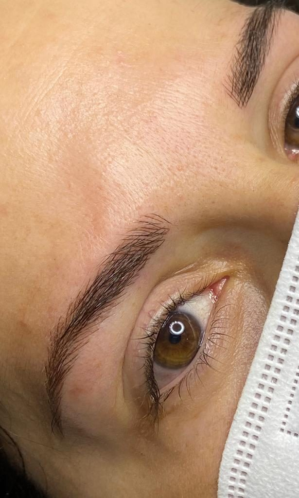
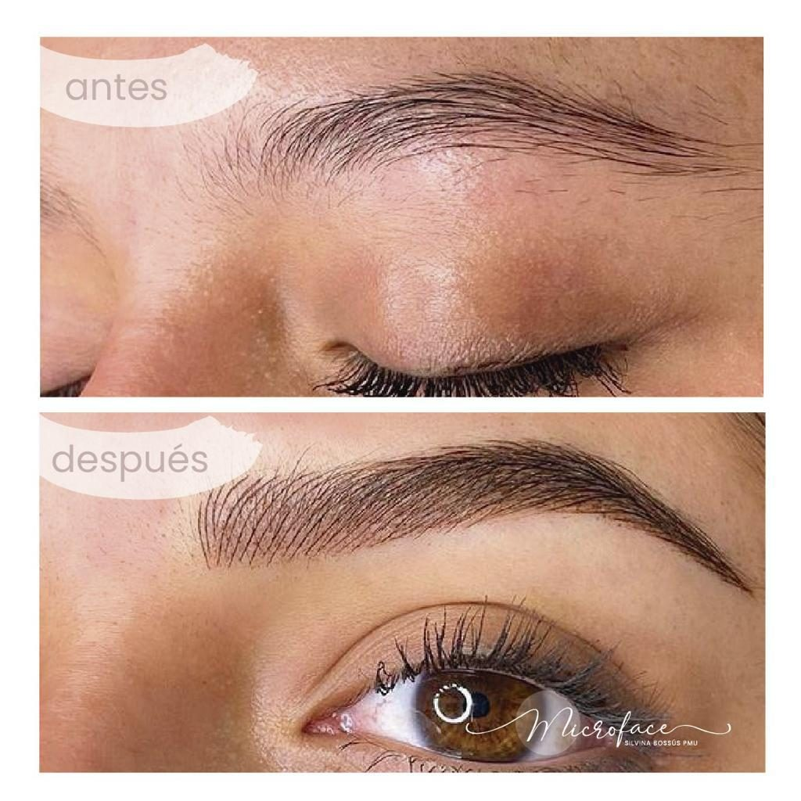

Precisión estética en cejas, labios, eyeliner y capilar.
Técnica y detalle
Trabajos realizados con foco en simetría, lectura del rostro, higiene y resultado progresivo.
La galería muestra trabajos y procesos del estudio.


Trabajos y procesos.



